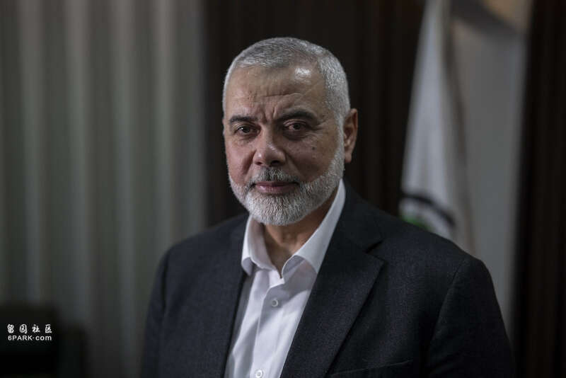

巴勒斯坦伊斯兰抵抗运动（哈马斯）政治局领导人伊斯梅尔·哈尼亚（Ismail Haniyeh）日前在伊朗首都德黑兰遭袭身亡后，中东地区再度剑拔弩张。
据《华盛顿邮报》当地时间8月6日报道，时值当前这一事关重大的时刻，拜登政府正竭力避免中东地区爆发暴力冲突，以免破坏人们期待已久的加沙地带停火协议。然而，作为该地区的一对最亲密盟友，这也突显了目前美国对于以色列的影响力有限。
报道援引三名熟悉白宫消息的人士披露，美以两国在幕后的摩擦已经越来越大。虽然以色列拒绝就哈尼亚遇刺一事发表评论，但在他7月31日身亡后，以色列第一时间立即通知美国官员“对此负责”，白宫方面则对此事件“感到惊讶和愤怒”（surprise and outrage），认为数月以来断断续续的加沙停火谈判正取得进展，而如今却遭遇了“挫折”。
当地时间7月25日，美国华盛顿特区，美国总统拜登和以色列总理内塔尼亚胡在白宫就加沙停火问题举行会谈。澎湃影像
几名美国高级政府官员称，在这场冲突的过程中，许多美国官员已经开始将以色列总理内塔尼亚胡（而非伊朗）视为遏制更广泛地区冲突的主要不确定因素。以色列曾多次在没有事先通知美国的情况下，对黎巴嫩真主党和伊朗的军事指挥官发动袭击，这激怒了美国总统拜登本人及其政府官员。
一名以色列官员也向《华盛顿邮报》证实，在哈尼亚死后，拜登和内塔尼亚胡的通话“很紧张”。不过，据几位了解内部讨论的人士透露，没有迹象表明拜登准备对以色列施加重大压力，试图遏制其行动，比如限制军事援助。
曾在奥巴马政府担任巴以谈判特使的弗兰克·洛温斯坦（Frank Lowenstein）认为，内塔尼亚胡“把美国置于了一个不可摆脱的境地”。“他正在挑起一场战争并可能把我们拖入其中，但没有人公开质疑这一点，因为我们显然会与以色列站在一起对抗伊朗。”

遭暗杀的巴勒斯坦伊斯兰抵抗运动（哈马斯）政治局领导人哈尼亚IC Photo资料图
《华盛顿邮报》报道称，当地时间8月5日，拜登和民主党总统候选人、副总统哈里斯，以及他们的高级顾问，在白宫战情室开会，讨论了伊朗可能对以色列发动的袭击，以及伊朗支持的伊拉克民兵组织针对美军发动的袭击，华盛顿方面誓言要“以我们选择的方式和地点”对袭击作出回应。
目前，美国已经紧急部署了更多的军事装备，包括一个F-22战斗机中队和海军驱逐舰，靠近离以色列更近的地点，以帮助防御伊朗即将发动的潜在袭击，据称这一袭击将是对上周哈尼亚在德黑兰遭暗杀的报复行动。
与此同时，美国国务卿布林肯正在领导一场向伊朗间接施压的外交攻势，他要求埃及、伊拉克和其他阿拉伯国家的高级官员敦促伊朗及其激进盟友作出克制的回应。
布林肯当地时间8月6日对记者说：“任何人都不应该使这场冲突升级。我们一直在与盟友和伙伴进行紧张的外交活动，直接向伊朗传达这一信息，我们直接向以色列传达了这一信息。”
然而，目前尚不清楚，美国的阿拉伯盟友能在多大程度上遏制伊朗预期中的报复。此外，华盛顿方面是否有能力劝阻内塔尼亚胡政府“不要进一步火上加油”，这仍然是一大疑问。
当地时间8月7日，应伊朗当局因军事训练避免飞越其领空的要求，埃及民航部已向所有埃及航空公司发出通知，在德黑兰时间8月7日11时30分至14时30分间，以及8月8日4时30分至7时30分间，各航司班机避免飞越伊朗领空。